含有关键词“拉伸”的文章
1-
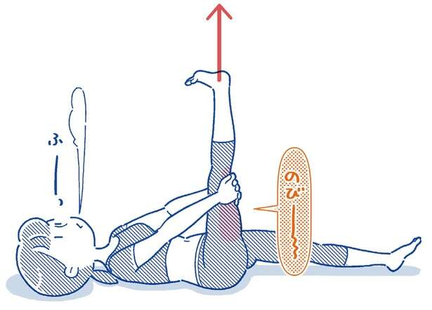
低压扰乱自主神经，浑身不舒服…… 发布日期：【腰痛治疗世界知名医生讲授】躺着、坐着的时候拉伸大腿后侧...
-
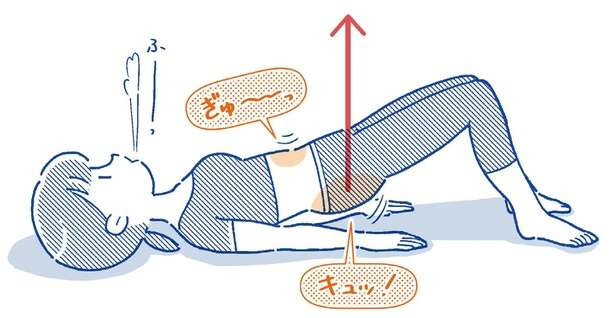
低压扰乱自主神经，浑身不舒服…… 发布日期：【腰痛治疗世界名医授课】如何走路一整天不痛！ “提臀”...
-
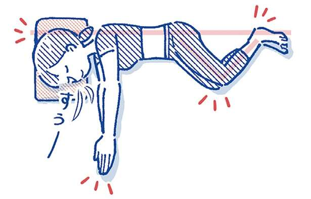
低压扰乱自主神经，浑身不舒服…… 发布日期：【腰痛治疗世界名医授课】躺着或坐着都可以做的「前胸伸展」...
-
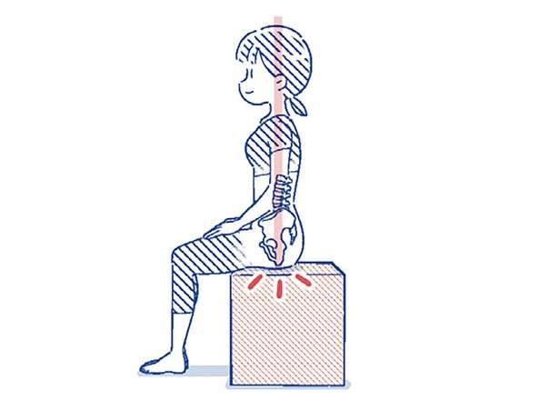
低压扰乱自主神经，浑身不舒服…… 发布日期：「横向胸部拉伸」拉伸纠正过度使用腰部的习惯【世界著名的腰痛治疗...
-
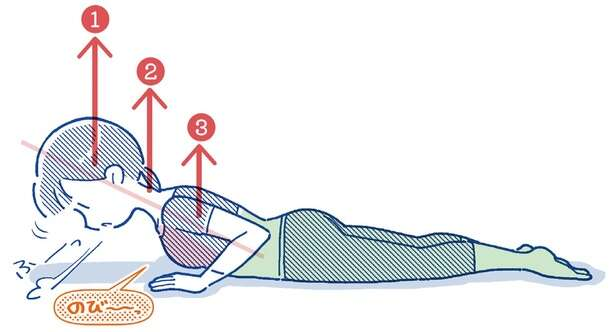
低压扰乱自主神经，浑身不舒服…… 发布日期：世界知名背痛医生传授缓解背痛的秘诀！注意你的肩胛骨和腹部肌肉
-
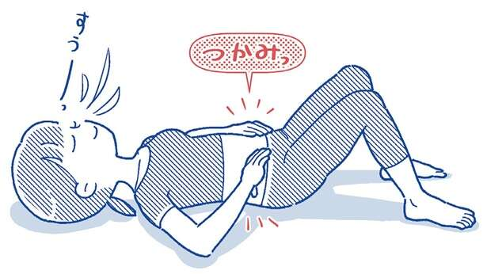
低压扰乱自主神经，浑身不舒服…… 发布日期：【腰痛治疗世界名医授课】正确使用天然束腹“腹横肌”...
-
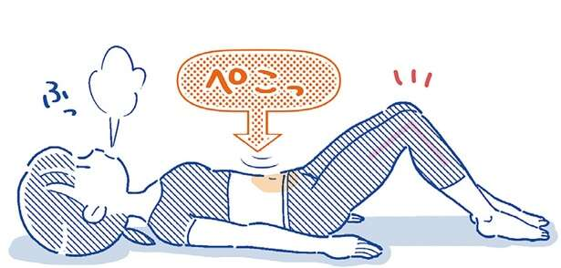
低压扰乱自主神经，浑身不舒服…… 发布日期：[对于那些担心腰部问题的人] 拉伸前你绝对需要知道的事情......
-
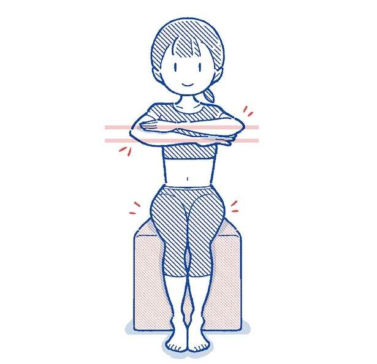
低压扰乱自主神经，浑身不舒服…… 发布日期：伸展运动是缓解腰痛的关键！首先，每天如何活动身体...
-
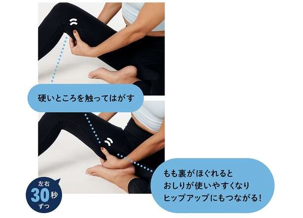
低压扰乱自主神经，浑身不舒服…… 发布日期：变瘦了！伸展运动以放松肌肉上方的脂肪 [每次 30 秒可以]
-
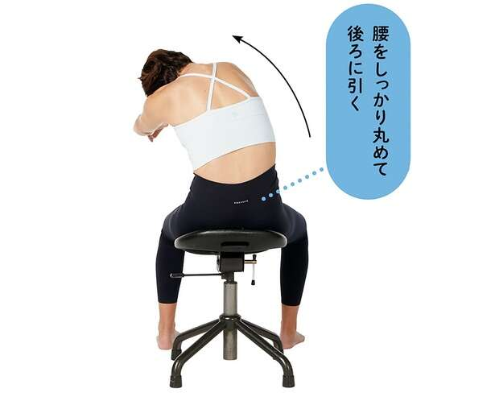
低压扰乱自主神经，浑身不舒服…… 发布日期：针对腰部顽固的浮肉！伸展腰部和臀部【一次30秒就可以了...
-
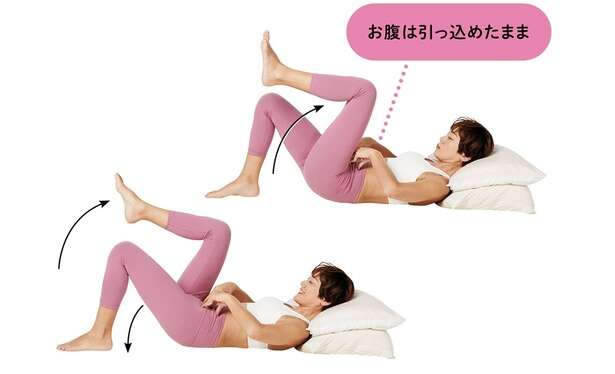
低压扰乱自主神经，浑身不舒服…… 发布日期：一次只需30秒！拉伸收紧腹部【睡觉时也可以做】
-
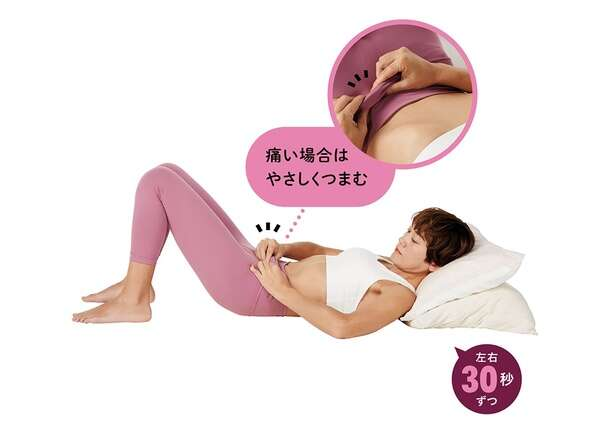
低压扰乱自主神经，浑身不舒服…… 发布日期：改善你的小肚腩！睡觉时可以做的“Tsumapuru”伸展运动